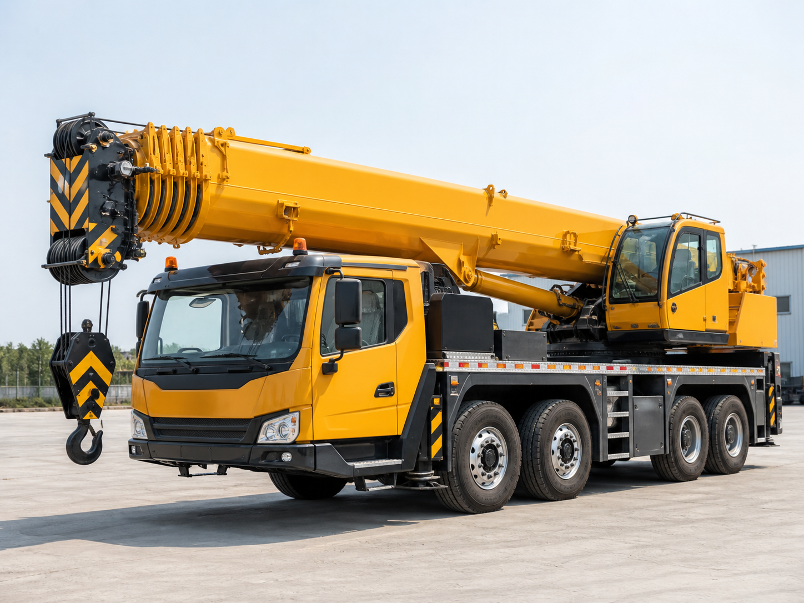
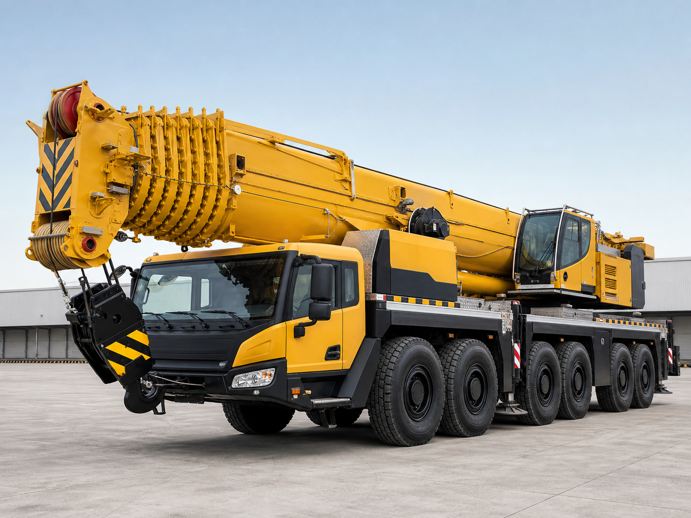
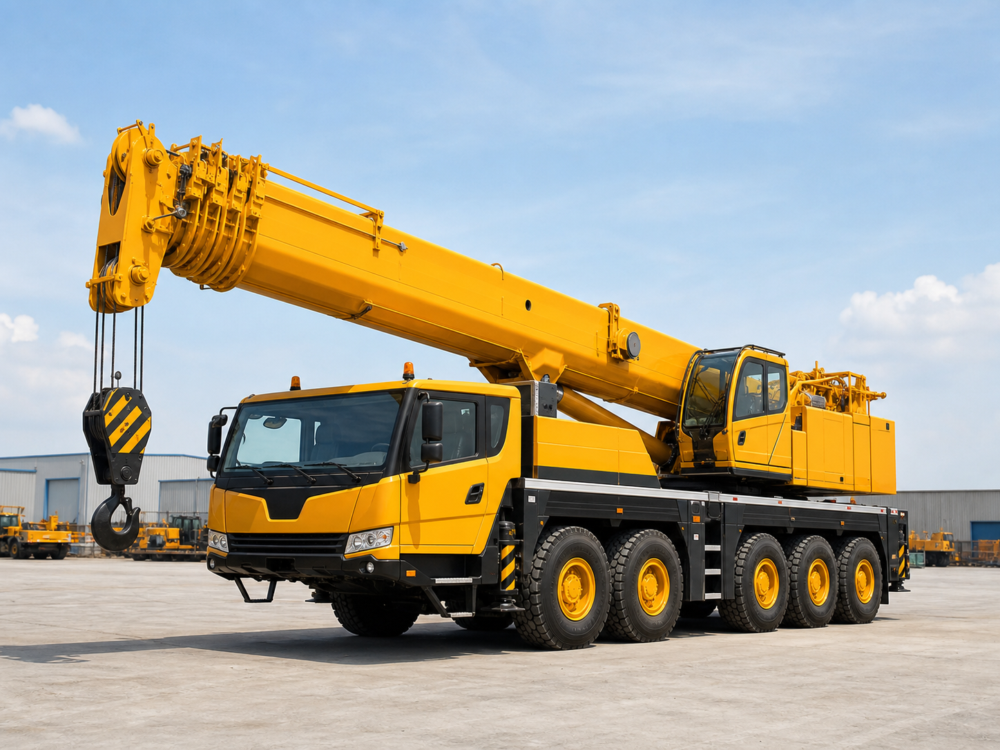
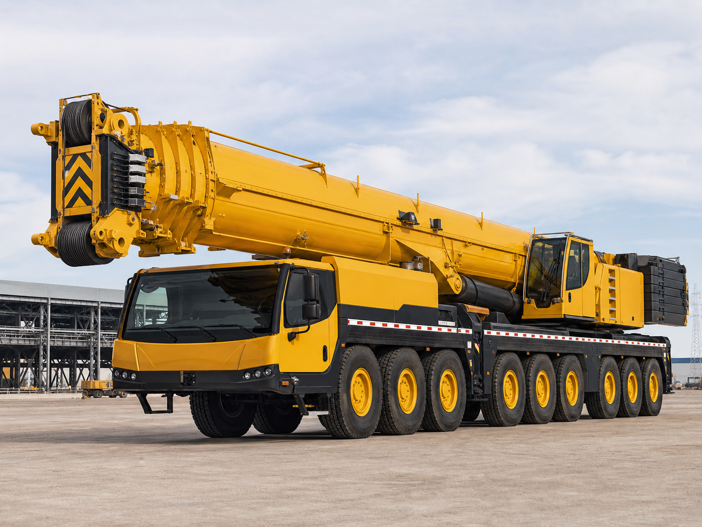
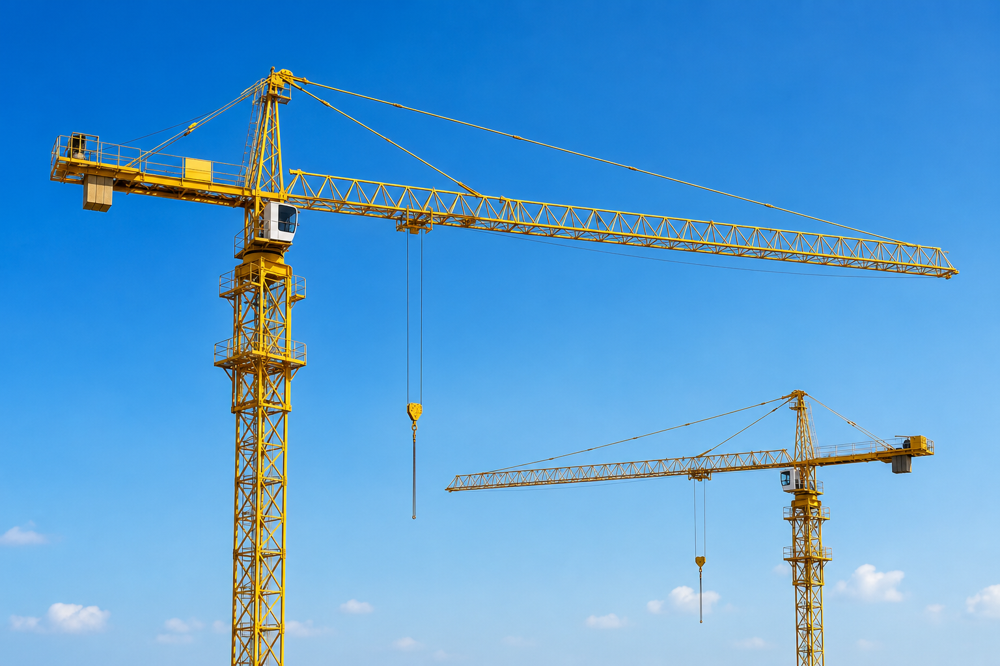
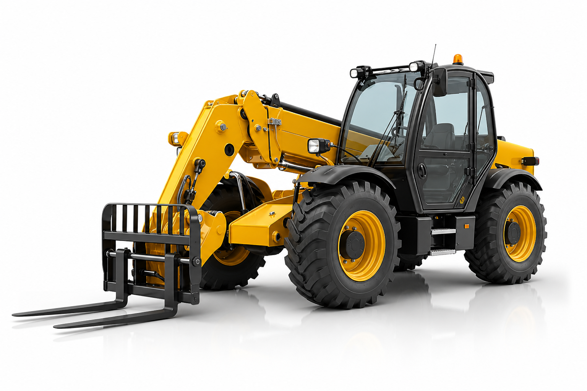

Grue Mobile 35T
Pour chantiers urbains, petits levages, accès limités et interventions rapides.
Demander ce type
Machines et levage
Un parc orienté chantier pour les opérations de levage, manutention, chargement, déchargement et assistance BTP à Agadir et au Maroc.
Nos Machines
Cette sélection présente les tonnages souvent demandés pour les chantiers de levage au Maroc. Chaque machine est confirmée selon disponibilité, accès chantier, poids, portée et conditions de sécurité.

Pour chantiers urbains, petits levages, accès limités et interventions rapides.
Demander ce typePour matériaux lourds, équipements techniques, pose chantier et manutention courante.
Demander ce type
Pour BTP, charpente, conteneurs, modules et opérations nécessitant plus de portée.
Demander ce typePour montage technique, charges volumineuses, équipements industriels et levage en hauteur.
Demander ce typePour charges lourdes, sites industriels, gros éléments de chantier et manutention complexe.
Demander ce typePour industrie, machines lourdes, installations techniques et levage préparé.
Demander ce type
Pour grands projets, modules lourds, contraintes de portée et levage exceptionnel.
Demander ce typePour manutention exceptionnelle, énergie, logistique lourde, sites industriels et chantiers spéciaux.
Demander ce type
Pour levage de matériaux, coffrage, charpente, pose technique et appui aux équipes BTP.
Demander ce type
Pour chargement, manutention, déplacement de matériaux et assistance chantier selon disponibilité.
Demander ce typePour travaux de chantier, préparation de site, chargement et besoins BTP ponctuels.
Demander ce typeLes tonnages sont indicatifs : l'équipe confirme la machine adaptée après étude technique et disponibilité.
Catalogue
Chaque demande est étudiée selon le poids, la hauteur, la portée, l'accès et la durée. Les capacités exactes sont confirmées au devis pour éviter toute mauvaise estimation.
Solution principale pour les travaux de levage sur chantier, pose d'éléments lourds et manutention d'équipements.
Intervention pour charger, décharger ou repositionner des charges lourdes lorsque les engins classiques ne suffisent pas.
Solutions complémentaires pour les besoins de préparation, manutention et organisation du chantier selon disponibilité.
Solutions étudiées pour les chantiers nécessitant levage, pose de matériaux et assistance aux équipes sur site.
Matériel chantier pour chargement, déplacement, préparation de site et manutention selon disponibilité.
Critères techniques
Le choix ne se fait pas uniquement au tonnage. Le poids réel, la distance de levage, l'espace disponible et le sol changent fortement la solution à prévoir.
Location flexible
Pour un levage rapide, une livraison lourde, un déchargement ou une pose limitée dans le temps.
Pour organiser plusieurs opérations de levage sur une même journée avec préparation du chantier.
Pour chantier BTP, installation industrielle ou opération récurrente nécessitant une organisation en amont.
Disponibilité
Envoyez les informations techniques. Le message sera préparé automatiquement sur WhatsApp.